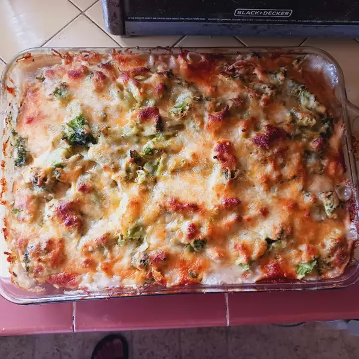

Easy Baked Chicken, Rice, and Broccoli Casserole

Description
A casserole (French: diminutive of casse, from Provençal cassa 'pan'[1]) is a variety of a large, deep pan or bowl used for cooking a variety of dishes in the oven; it is also a category of foods cooked in such a vessel. To distinguish the two uses, the pan can be called a "casserole dish" or "casserole pan", whereas the food is simply "a casserole". The same pan is often used both for cooking and for serving.
Ingredients:
- cooking spray
- 1 pound skinless, boneless chicken breast, diced
- 1 (10 ounce) can condensed cream of chicken soup
- 1 (10 ounce) package frozen chopped broccoli
- 1 cup uncooked white rice
- ¾ cup water
- ½ cup shredded Cheddar cheese, or to taste
Steps:
- Preheat the oven to 375 degrees F (190 degrees C). Spray a 9x13-inch baking pan with cooking spray.
- Combine chicken, soup, broccoli, rice, and water in a bowl; mix thoroughly. Transfer mixture to the prepared baking pan and cover with foil.
- Bake in the preheated oven for 30 minutes. Uncover, stir, top with Cheddar cheese, and cover again. Continue to bake until chicken is no longer pink in the center, rice is tender, and cheese is melted and bubbly, about 10 minutes more.